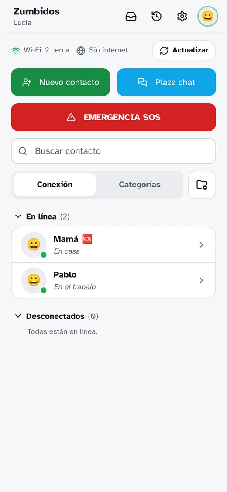
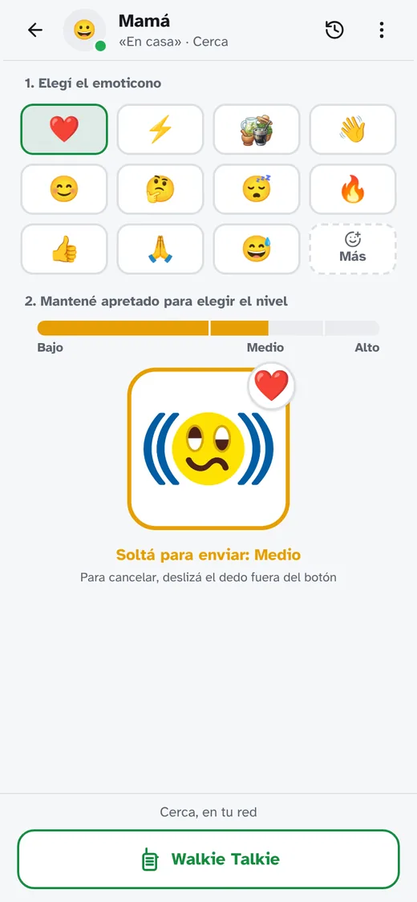
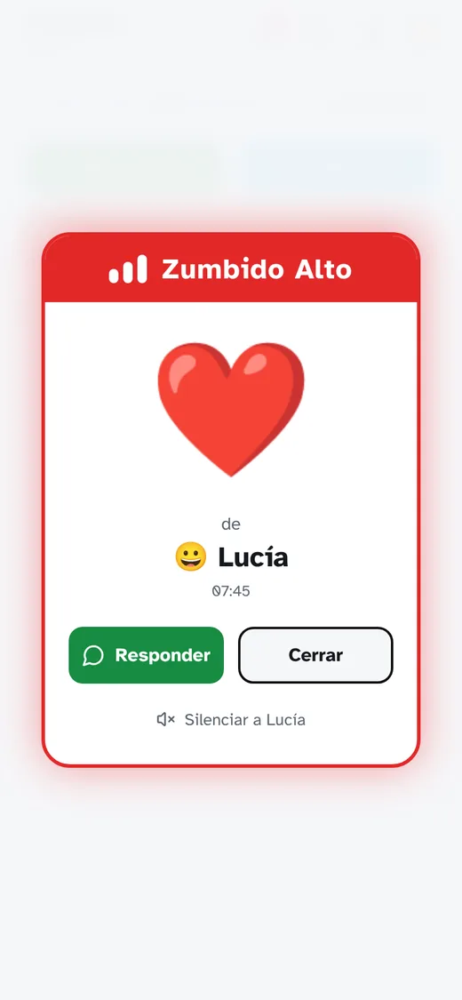
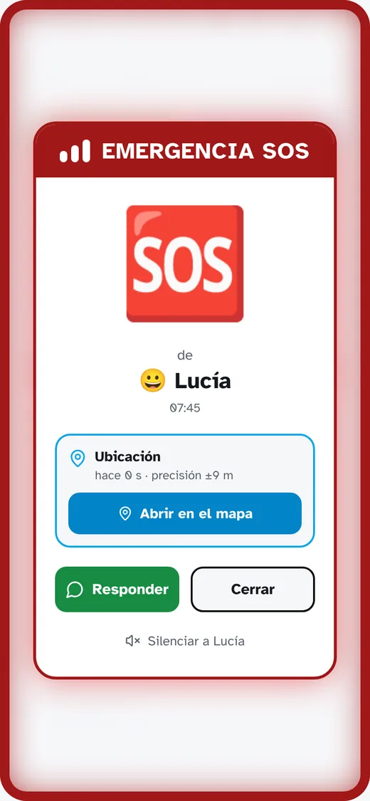

Avisale a tu gente sin escribir una palabra.
Zumbidos manda un emoticono y un nivel de urgencia a tus contactos cercanos. Le llega al instante, vibra y aparece encima de todo, por Wi‑Fi o por internet.
Probalo: mantené apretado
Cómo se usa
Tres pasos, sin teclado. Pensado para avisos rápidos: «llegué», «vení», «te necesito».
-
1
Elegí a quién
Tus contactos aparecen en línea cuando están en tu Wi‑Fi o conectados por internet, con su mensaje de estado.

-
2
Elegí el emoticono y mantené apretado
Cuanto más tiempo apretás, más urgente es. Si te arrepentís, deslizá el dedo fuera del botón.

-
3
Le llega al instante
Vibra, suena y la pantalla tiembla según el nivel. El aviso queda a la vista hasta que responda o lo cierre.

Qué más hace
Funciona sin internet
Entre teléfonos de la misma red Wi‑Fi los zumbidos van directo, de teléfono a teléfono. Internet es opcional, para cuando están lejos.
Walkie talkie
Mantené el botón y hablá: tu contacto te escucha en el momento. No se graba nada.
Plaza chat
Un chat abierto con quienes están cerca, con un alias. Los mensajes no se guardan: duran mientras estés en la plaza.
Llega aunque la app esté cerrada
Con el permiso correspondiente, el aviso aparece encima de cualquier otra app.
Más de 1.800 emoticonos
Los de siempre y algunos propios, como el tereré. Los que más usás quedan a mano.
Categorías y estados
Agrupá a tus contactos en Familia, Amigos o Trabajo, y poné un mensaje de estado como «Manejando».
SOS para cuando importa
- Llega a tus contactos de emergencia con una sirena que suena hasta que lo atiendan, aunque tengan el teléfono en silencio.
- Mientras dure, les comparte tu ubicación cada 30 segundos para abrirla en el mapa.
- Te avisa quién lo vio o respondió, y lo cerrás con «Ya estoy bien».
- Nadie puede hacerte sonar una sirena sin permiso: cada contacto de emergencia tiene que aceptar.
Zumbidos no reemplaza al 911 ni a los servicios de emergencia.

Tus datos se quedan en tu teléfono
No hay cuenta ni registro con correo. Tu perfil, tus contactos y tu historial se guardan solo en tu teléfono. Cada zumbido va cifrado de punta a punta y firmado: solo tu contacto lo puede abrir y sabe que viene de vos. Por internet, el servidor solo pasa sobres cerrados que no puede leer.
Instalarla
Por ahora se instala desde este sitio; estamos preparando la publicación en Google Play.
- Desde el teléfono, tocá Descargar Zumbidos. Si te llegó el enlace por WhatsApp, abrilo en el navegador.
- Abrí el archivo descargado. Android va a pedir permiso para «instalar apps desconocidas» desde el navegador: aceptalo. Es normal en apps que no vienen de Play.
- Abrí Zumbidos, creá tu perfil con un nombre y un emoticono, y agregá a tu gente con el código QR.
Requiere Android 6 o posterior. Las actualizaciones se instalan desde la misma app, en Configuración → Actualizaciones. Ver la última versión y sus novedades.
Preguntas frecuentes
¿Tiene costo?
No. Es gratis y no tiene publicidad.
¿Necesito internet?
No, si están en la misma red Wi‑Fi. Con internet activado, también te llegan los zumbidos de contactos que están lejos.
¿Cómo agrego a alguien?
En persona, escaneando su código QR; o pegando el código que te mande. Así nadie te agrega sin que lo sepas.
¿Hay versión para iPhone?
Todavía no. Por ahora es solo para Android.
¿Qué pasa si pierdo el teléfono?
Como todo se guarda en el teléfono, en uno nuevo hay que crear el perfil y volver a agregar a los contactos.